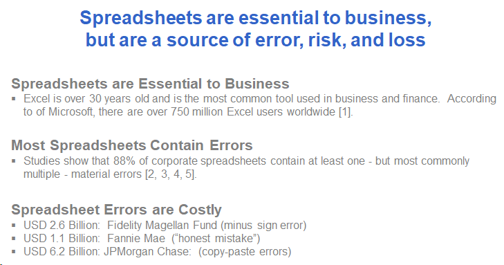
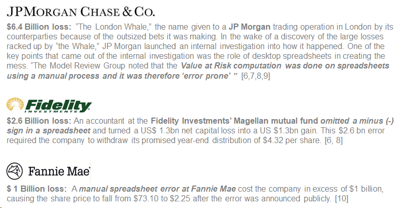

External References
[1] www.businessinsider.com/satya-nadella-excel-is-microsofts-best-consumer-product-2016-6
[2] European Spreadsheet Risks Interest Group: https://eusprig.org/
[3] https://www.forbes.com/sites/bernardmarr/2016/06/16/spreadsheet-reporting-5-reasons-why-it-is-bad-for-business
[4] https://www.forbes.com/sites/metabrown/2017/10/30/why-spreadsheets-are-eating-your-business-from-the-inside-out/
[5] https://www.marketwatch.com/story/88-of-spreadsheets-have-errors-2013-04-17
[6] https://www.cio.com/article/2438188/eight-of-the-worst-spreadsheet-blunders.html
[7] https://www.businessinsider.com/excel-partly-to-blame-for-trading-loss-2013-2
[8] https://blog.trginternational.com/7-worst-financial-fiascos-caused-by-excel-errors
[9] https://www.forbes.com/sites/salesforce/2014/09/13/sorry-spreadsheet-errors
[10] https://www.nytimes.com/2003/10/30/business/fannie-mae-corrects-mistakes-in-results.html